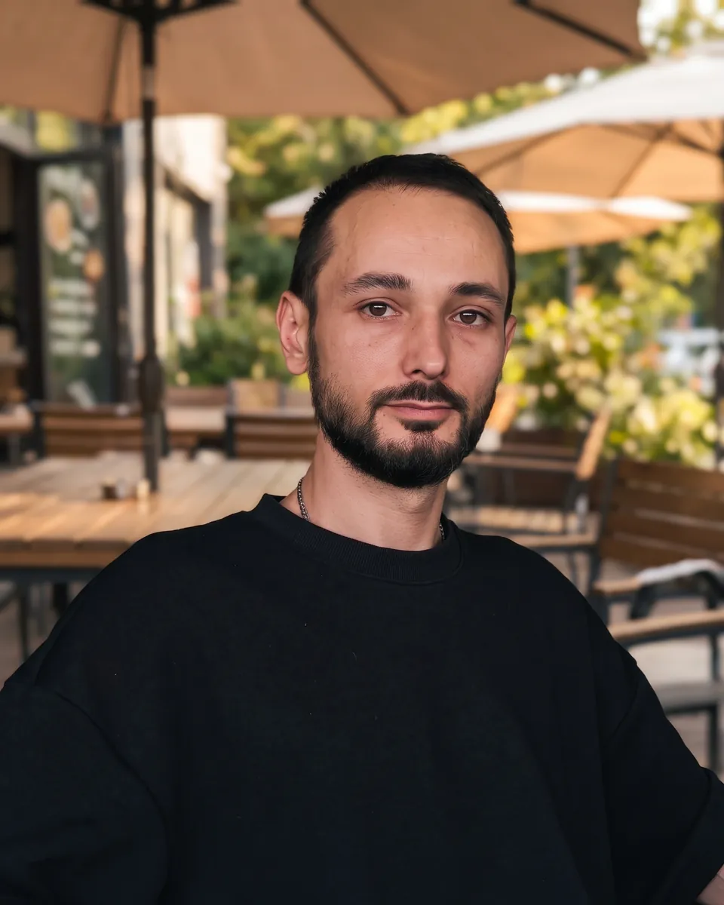

Founding engineer
DeviDevs Technologies, Bucharest
Primary builder of the company's SaaS product, plus client delivery on agents, automation and integration work. Freelance engagements run in parallel.

Senior AI engineer. Agents, Claude Code, automation.
I build AI agents and the software around them, from the first drawing to a product running in production. I do the work myself.
Write to me directly. You get me, and not an account manager.
The scope of the work, and the second thing I sell.
I build agent systems that do real work. A multi-tenant SaaS that runs a client's email marketing. A phone agent that books into a live calendar. A scraping pipeline that finds leads. A transcriber that never sends audio off the machine. Architecture to deployed product, usually alone, sometimes leading a small team.
A chat window answers questions. These systems read your data, call your APIs, decide what to do next, and write the result back where your business already uses it. Fig. 1 shows the shape of it.
The second thing I sell is teaching. My company runs an internship programme with the university where I studied, and two of its groups have been mine. What I teach is the layer under the tool: skills, deterministic hooks, subagents, MCP, context engineering. That layer moves between harnesses, which is why the course ran on opencode while my own work runs on Claude Code. If your team needs to work this way, that is the same job from the other side.
Fig. 1
Value, period, source. Nothing here is rounded up.
10,000+ emails in about 3 months
Delivered for one handmade jewellery and accessories e-commerce brand through the flows, broadcasts and win-back sequences I built, at a 44 percent open rate over the period. The client describes the result herself, by name, in Plate IV.
Source: ClevMail platform reporting, about 3 months in 2026.
More than 1,100 commits are mine
On the ClevMail repository, which I designed and wrote. That is over 99 percent of the delivered branch. The other two contributors have five commits between them.
Source: git history on the delivered branch, counted 2026-08-26.
87 hours transcribed, zero API cost
95 recordings through a batch Whisper pipeline on a local GPU. Nothing went to an API, because this is material that must not leave the machine.
Source: own systems, counted 2026-07-05.
Built and running. Team work is labelled team work.
Primary builder
A multi-tenant email marketing platform where every client gets an AI agent that learns their business. Welcome, abandoned cart and post-purchase flows. Broadcast campaigns and a signup form builder with double opt-in. GDPR consent handled by tag, so a client only mails people who agreed. Bad addresses are switched off automatically.
I designed it and wrote almost all of it. It went self-service in production on 11 June 2026: 63 commits, 5 migrations, no merge regressions. Before public signup I ran an adversarial audit against my own product and closed an access-control hole on the reports endpoint. It is live, and the businesses on it are selling through it.
Built and installed, for a DeviDevs client
Expert Trade sells chemicals and laboratory products and bids in public tenders. On 7 July 2026 I installed Claude Code with a memory system in their office, then built the tools for that work: decoding a supplier's catalogue codes, drafting offers, putting tender documents together.
What it taught me: the value was not in commands. It was in what the system remembered, and in judgment applied case by case. So from then on, what I built there started on its own or from a plain sentence.
Tutor, my own groups
DeviDevs runs an internship partnership with the Technical University of Civil Engineering Bucharest, where I studied. The programme has taught more than 45 students across three editions. Two of those groups were mine: eleven students in 2025, and one group in the 2026 round.
Students arrive knowing how to write code and leave having shipped a working application with AI tooling, under sprints, code review and a real ticket board. Agile practice that was not a simulation. It is paid work under contract, and seven of the juniors asked to keep working with me after their group ended.
Freelance build
Built for small businesses in Sweden. Every social and messaging channel landed in one hub, and the agent either answered on its own or wrote a draft for a human to approve, switchable per business.
It picked up the phone and spoke Swedish. Before it answered, it checked the real calendar, and it wrote the booking straight in. It behaved differently inside and outside working hours, and it answered from a company knowledge base that stayed current.
Delivered, mostly under NDA
For people who run companies: a second brain, meaning a working memory of the business that the AI reads before it acts, plus the rules and the operational side around it. It is close to the system I run my own work on. I built one for Expert Trade, above. The others are under NDA.
Sole builder
Meeting transcription that runs entirely on a local GPU. Nothing leaves the machine, which is the whole point: the recordings it handles are ones no cloud service should ever see.
It records both sides locally, then runs a high quality transcription pass when the session ends, then writes the summary and the action items. I use it in production for teaching sessions and business meetings.
Sole developer
A full storefront rebuild on Sylius for a live shop with real revenue, under contract and on my own. Templates, product taxonomy, content architecture, Stripe payments, and a checkout that records consent properly.
The content moved into editable blocks so the owner changes his own copy without paying a developer for every comma.
Frontend, team product
The site of the studio where I am founding engineer. I built the frontend. The product is the team's.
Also delivered, under NDA: agents for legal work, for four clients.
Used in the work above, not a list of things I have heard of.
Claude Code, opencode, Anthropic API, Google Vertex AI, agent architecture, retrieval, local Whisper, voice agents
Python, FastAPI, Flask, PHP, Symfony, Sylius, Node.js, Postgres, ClickHouse, REST APIs
TypeScript, React, Next.js, Tailwind, HTML and CSS, interface design, Figma
Docker, GitHub Actions, Vercel, Render, Azure, Microsoft 365, PowerShell, Playwright, n8n
Most recent first.
DeviDevs Technologies, Bucharest
Primary builder of the company's SaaS product, plus client delivery on agents, automation and integration work. Freelance engagements run in parallel.
Aviation, legal and travel clients
Microsoft 365 for more than 1,000 users. Hybrid directory synchronisation, a cloud migration covering more than 800 users, provisioning automated end to end, and 70+ devices deployed with zero touch.
Standart Park
Ran the online sales operation end to end, from the storefront to fulfilment, and maintained the site itself.
Same Day Delivery Solutions
Started as an analyst and finished running the centre. Optimised fleet activity and delivery routes on operational data, and was the single point of contact between clients, subcontractors and internal teams.
Where the engineering came from.
Automation and applied informatics: control systems, signals, and the habit of drawing a system before building it. Fig. 1 on Plate II comes straight out of that training. An agent with a feedback path is a control loop.
I am back in the same faculty now, on the other side of the room.
Read before you judge the repositories.
The code on this account belongs to clients and to a company, so most of it is private. The contribution graph is the real work. Ask for a walkthrough or a screen share and I will show you the running system.
Client names are withheld until the client agrees. Every figure on Plate III comes from a system I can open in front of you.
Team work is labelled team work and solo work is labelled solo. Where I wrote almost all of something, Plate III gives the commit count.